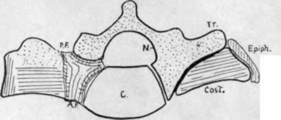
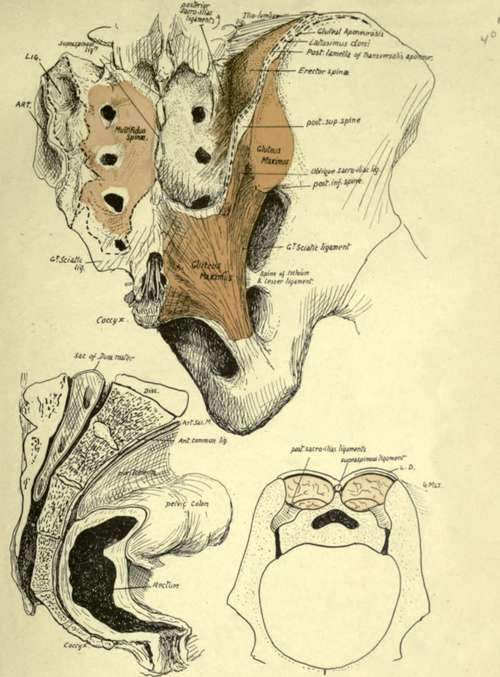
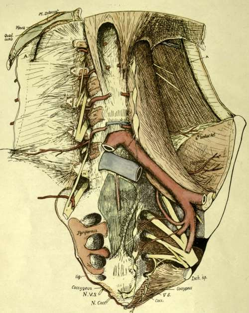

Sacral Vertebra. Part 2
Description
This section is from the book "The Anatomy Of The Human Skeleton", by J. Ernest Frazer. Also available from Amazon: The anatomy of the human skeleton.
Sacral Vertebra. Part 2
Looking at the bone from above, it is easy to see that the lateral mass is built up by the fusion of these costal elements and transverse processes, and the same structure can be traced down through it until it reaches its end in the badly developed elements of the fifth segment. In addition to these fundamental parts of the lateral mass, there are epiphyses that cover its lateral aspect (Fig. 33). There are also ossifications of inter-transverse, costo-transverse, and other ligaments.
Fig. 33.-To show the constitution of the lateral piece of the sacrum. Tr. transverse element; Cost, costal element; Epiph. marginal epiphysis; N. neural arch; C. centrum ; A.F., P.F. anterior and posterior sacral foramina.
Fig. 34.-The upper figure shows the sacro-coccygcal region from behind. On the left side are the areas for Multifidus, great sciatic ligament, posterior sacroiliac ligs. {LIG), and articular surface (ART). On the right the Multifidus has been altogether removed ; it is covered in by the mass of Erector spina*, which is arising from the posterior sacro-iliac ligaments and the adjacent part of the ilium. These post-vertebral muscles are shut in by a thick aponeurosis which is fastened to the spinous ridge and to the iliac crest externally : it is a compound of post-vertebral aponeurosis and aponeurotic origin of Latissimus dorsi, and its iliac attachment is shown by interrupted lines. It is fused below with the great sciatic ligament and is shown cut here ; this continuity with the ligament explains how the Gluteus maximus and the ligament obtain origin from the lower part of the sacrum. Multifidus does not extend down to the lower part of the bone, and here the ligamentous fibres are attached to the sacrum and cover in the hiatus sacralis centrally, with the nerves, etc., lying in it. In the drawing the hiatus and coccyx have been exposed by removal of this covering of fibrous tissue. It should be noted that Multifidus really arises from the surface of a fibrous sheet which is attached to points on the bone, and not directly from the bone itself; the junction between the nerves takes place between this sheet and the bone. The lower left figure shows a section through the middle line of the sacrum and coccyx, illustrating their relations with the rectum and peritoneum. The remaining figure is a scheme of a section across the pelvis to show how the sacrum is " suspended " between the innominate bones by the posterior sacro-iliac ligaments, which must, therefore, be exceedingly thick and strong. Behind these the post-vertebral muscles fill up the deep fossa between the posterior parts of the iliac crests and the sacral spines. Compare this with the first figure LD, plane of Latiss. dorsi fused with post-vertebraI aponeurosis.
Fig. 35.-To show the anterior relations of the lumbar column and sacrum. Semidiagrammatic, the lower portion being represented as somewhat flattened out in order to exhibit the structures. For the lumbar region the figure should be compared with Fig. 27, and for the sacrum, with Fig. 34 (2). A, cut anterior lamella of Transversalis aponeurosis : a, its attachment on transverse process: ps, origin of Psoas : QL, Quadratus lumborum : lig., attachment of small sacro-sciatic ligament, continuous with Coccygeus : Ar. VS. N. Cocc, anterior divisions of last sacral and coccygeal nerves. The aorta is cut away clown to the bifurcation, leaving the lumbar arteries in place ; these are exposed on one side by removal of the Psoas. The first two arteries run under the crus of the Diaphragm on each side as well as the Psoas. They come into contact with the bones as soon as they come off the anterior common ligament. Observe that the main (middle) lamella of Transversalis aponeurosis contains fibres radiating from the ends of the transverse processes, and these are continuous with the costo-himbar set above and with the iliolumbar bands below : all these are behind the plane of Quadratus lumborum. The band seen in front of the lower end of the muscle is in the anterior lamella and does not really belong to the proper ilio-lumbar ligamentous system. The central part of the sacrum is covered for its upper half or so by peritoneum, forming the pelvic mesocolon along an oblique line, and supports the rectum below. The peritoneum has been cut to expose the middle sacral artery. Pyriformis origin extends on to the bodies, and this is usually the onlv part of the origin that is tendinous, making definite markings on the bone. The sympathetic chain and lateral sacral arteries reach the bone under the peritoneum internal to these origins. The small sacro-sciatic ligament is attached to the edge of the bone as far up as the lower level of the articular surface ; it is continuous below with the Coccygeus, the fibres of which muscle also extend on to the front of the bone and join the fibrous tissue which covers this aspect of the bone and the coccyx and separates them from the rectum. The last sacral and coccygeal nerves must pierce the Coccygeus to reach a plane anterior to the bone. Other details are considered in the text.
The articular surface for the sacrum on the innominate bone extends back on to the posterior inferior spine of that bone, so that this bony point is opposite the third sacral segment : the great sciatic ligament is attached above to the inferior spine, and from this extends on to the lower part of the transverse tubercle of the third segment. The upper part of the tubercle has the superficial oblique fascicles of the sacroiliac ligaments attached to it. Below this level the great sacro-sciatic ligament is fastened to the posterior aspect of the lateral margin of the bone and to the transverse tubercles, extending down to the coccyx, and more superficial fibres extend further in to obtain attachment to the articular masses and cover some outer fibres of the Multifidus spinae arising from the bone. Gluteus maximus spreads from the ilium down this ligament and thus gets indirect origin from the bony points of the lower part of the sacrum (see Fig. 34).
Fibres of Multifidus spinae can be found arising in the sacral groove as far down as the fourth segment, and extending outwards between the third and fourth foramina : above this the fibres reach the sacro-iliac ligaments externally, so that the more superficial Erector spinae is separated by it from the sacrum and only reaches bone (ilium) outside the ligamentous area, though it has some slight attachment through its covering aponeurosis to the median spinous ridge.
Continue to: